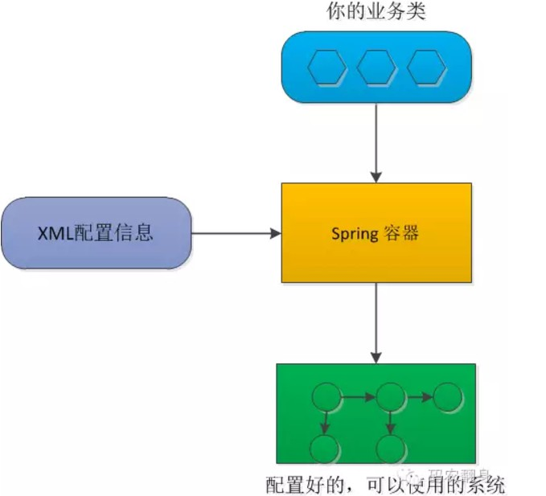
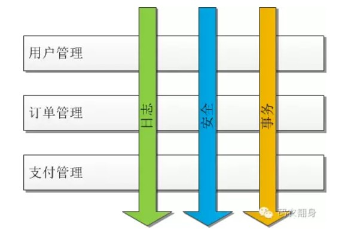
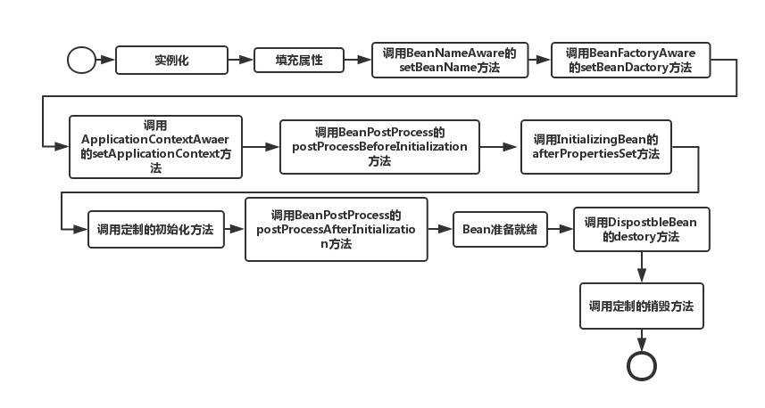

人生而迷茫吗？
概述
学了Spring框架那么久，也没有很好总结过，很长时间不用有马上都忘了，今天来总结一下。无论什么框架，一切皆源于Java最底层的设计。
为什么使用Spring
Spring是最近最火的框架，是快速开发项目最不可或缺的。
Spring主要两个有功能为我们的业务对象管理提供了非常便捷的方法：
- DI（Dependency Injection，依赖注入）
- AOP（Aspect Oriented Programming，面向切面编程）
Java Bean
每一个类实现了Bean的规范才可以由Spring来接管，那么Bean的规范是什么呢？
- 必须是个公有(public)类
- 有无参构造函数
- 用公共方法暴露内部成员属性(getter,setter)
实现这样规范的类，被称为Java Bean。即是一种可重用的组件。
依赖注入（DI）
简单来说，一个系统中可能会有成千上万个对象。如果要手工维护它们之间的关系，这是不可想象的。我们可以在Spring的XML文件描述它们之间的关系，由Spring自动来注入它们——比如A类的实例需要B类的实例作为参数set进去。
以前这种管理对象的方式称为：Inversion of Control, 简称IoC。 但是IoC这个词不能让人更加直观和清晰的理解背后所代表的含义， 于是Martin Flower先生就创造了一个新词 : 依赖注入 (Dependency Injection，简称DI)。
通过Spring容器管理的对象默认是单例的，基本过程是：
- 解析xml或通过注解, 获取各种元素
- 通过Java反射把各个bean 的实例创建起来。
- 通过Java反射调用类的两个方法：set/get，把实例注入进来
其实Spring的处理方式和上面说的非常类似， 当然Spring 处理了更多的细节，例如不仅仅是setter方法注入， 还可以构造函数注入，init 方法， destroy方法等等， 基本思想是一致的。

既然对象的创建过程和装配过程都是Spring做的， 那Spring 在这个过程中就可以玩很多把戏了， 比如对你的业务类做点字节码级别的增强， 搞点AOP什么的， 这都不在话下了。
面向切面编程（AOP）
在分布式开发中，把不同的模块进行解耦分离，但是分解以后就会发现有些很有趣的东西， 这些东西是通用的，或者是跨越多个模块的：
日志： 对特定的操作输出日志来记录
安全：在执行操作之前进行操作检查
性能：要统计每个方法的执行时间
事务：方法开始之前要开始事务，
结束后要提交或者回滚事务
等等….
这些可以称为是非功能需求， 但他们是多个业务模块都需要的， 是跨越模块的， 把他们放到什么地方呢？
就以日志系统为例。在执行某个操作前后都需要输出日志，如果手工加代码，那简直太可怕了。而且等代码庞大起来，也是非常难维护的一种情况。
最简单的办法就是把这些通用模块的接口写好， 让程序员在实现业务模块的时候去调用就可以了。
也许你会想到通过以下两种设计模式可以暂时解决：
- 模版方法
- 装饰者模式
模版方法
用设计模式在某些情况下可以部分解决上面的问题，如模版方法伪代码如下：
以订单管理和支付管理为例：
1 |
|
在父类（BaseCommand）中已经把那些“乱七八糟“的非功能代码都写好了， 只是留了一个口子（抽象方法doBusiness()）让子类去实现。
子类变的清爽， 只需要关注业务逻辑就可以了。调用也很简单，例如：
BaseCommand cmd = … 获得PlaceOrderCommand的实例…
cmd.execute();
缺点：
- 这样方式的巨大缺陷就是父类会定义一切： 要执行哪些非功能代码， 以什么顺序执行等等 子类只能无条件接受，完全没有反抗余地。
- 如果有个子类， 根本不需要事务， 但是它也没有办法把事务代码去掉。
装饰者模式
如果利用装饰者模式， 针对上面的问题，可以带来更大的灵活性：如下代码所示：
1 | public interface Command { |
缺点：
如果仔细思考一下就会发现装饰者模式的不爽之处:
(1) 一个处理日志/性能/事务 的类为什么要实现 业务接口（Command）呢?
(2) 如果别的业务模块，没有实现Command接口，但是也想利用日志/性能/事务等功能，该怎么办呢？
最好把日志/安全/事务这样的代码和业务代码完全隔离开来，因为他们的关注点和业务代码的关注点完全不同 ，他们之间应该是正交的，他们之间的关系
应该是这样的：

如果把这个业务功能看成一层层面包的话， 这些日志/安全/事务 像不像一个个“切面”(Aspect) ？
如果我们能让这些“切面“能和业务独立， 并且能够非常灵活的“织入”到业务方法中， 那就实现了面向切面编程(AOP)！
实现AOP
在用代码使用AOP之前，我们先了解其中的一些名词概念：
通知（Advice）
通知定义了切面是什么以及何时使用。除了描述切面要完成的工作，通知还解决了何时执行这个工作的问题。它应该应用在某个方法被调用之前？之后？之前和之后都调用？还是只在方法抛出异常时调用？
Spring切面可以应用5种类型的通知：
- 前置通知（Before）：在目标方法被调用之前调用通知功能；
- 后置通知（After）：在目标方法完成之后调用通知，此时不会关心方法的输出是什么；
- 返回通知（After-returning）：在目标方法成功执行之后调用通知；
- 异常通知（After-throwing）：在目标方法抛出异常后调用通知；
- 环绕通知（Around）：通知包裹了被通知的方法，在被通知的方法调用之前和调用之后执行自定义的行为。
| 注解 | 通知 |
|---|---|
| @After | 通知方法会在目标方法返回或抛出异常后调用 |
| @Before | 通知方法会在目标方法调用之前执行 |
| @AfterReturning | 通知方法会在目标方法返回后调用 |
| @AfterThrowing | 通知方法会在目标方法抛出异常后调用 |
| @Around | 通知方法会将目标方法封装起来 |
连接点（Join point）
连接点是在应用执行过程中能够插入切面的一个点。这个点可以是调用方法时、抛出异常时、甚至修改一个字段时。切面代码可以利用这些点插入到应用的正常流程之中，并添加新的行为。(被拦截到的点，因为Spring只支持方法类型的连接点，所以在Spring中连接点指的就是被拦截到的方法，实际上连接点还可以是字段或者构造器)
切点（Pointcut）
如果说通知定义了切面的“什么”和“何时”的话，那么切点就定义了“何处” 。切点的定义会匹配通知所要织入的一个或多个连接点。我们通常使用明确的类和方法名称，或是利用正则表达式定义所匹配的类和方法名称来指定这些切点。有些AOP框架允许我们创建动态的切点，可以根据运行时的决策（比如方法的参数值）来决定是否应用通知。（对连接点进行拦截的定义）。
切面（Aspect）
通知+切点=切面
引入（Introduction）
引入允许我们向现有的类添加新方法或属性
织入（Weaving）
织入是把切面应用到目标对象并创建新的代理对象的过程。切面在指定的连接点被织入到目标对象中。在目标对象的生命周期里有多个点可以进行织入：
- 编译期：切面在目标类编译时被织入。这种方式需要特殊的编译器。AspectJ的织入编译器就是以这种方式织入切面的。
- 类加载期：切面在目标类加载到JVM时被织入。这种方式需要特殊的类加载器（ClassLoader），它可以在目标类被引入应用之前增强该目标类的字节码。AspectJ 5的加载时织入（load-time weaving，LTW）就支持以这种方式织入切面。
- 运行期：切面在应用运行的某个时刻被织入。一般情况下，在织入切面时，AOP容器会为目标对象动态地创建一个
代理对象。Spring AOP就是以这种方式织入切面的。
Spring对AOP的支持:
1.基于代理的经典Spring AOP；
2.纯POJO切面（4.x版本需要XML配置）；
3.@AspectJ注解驱动的切面；
4.注入式AspectJ切面（适用于Spring各版本）。
前三种都是Spring AOP实现的变体，Spring AOP构建在动态代理基础之上，因此，Spring对AOP的支持局限于方法拦截。也就是说，AspectJ才是王道。
XML中声明切面
| AOP配置元素 | 用途 |
|---|---|
<aop:advisor> |
定义AOP通知器 |
<aop:after> |
定义AOP后置通知（不管被通知的方法是否执行成功） |
<aop:after-returning> |
定义AOP返回通知 |
<aop:after-throwing> |
定义AOP异常通知 |
<aop:around> |
定义AOP环绕通知 |
<aop:aspect> |
定义一个切面 |
<aop:aspectj-autoproxy> |
启用@AspectJ注解驱动的切面 |
<aop:before> |
定义一个AOP前置通知 |
<aop:config> |
顶层的AOP配置元素。大多数的<aop:*>元素必须包含在<aop:config>元素内 |
<aop:declare-parents> |
以透明的方式为被通知的对象引入额外的接口 |
<aop:pointcut> |
定义一个切点 |
示例：
1 | public interface Performance(){ |
现在来写一个切点表达式，这个表达式能够设置当perform()方法执行时触发通知的调用。
1 | execution(* concert.Performance.perform(..)) |
1 | public class Audience{ |
通过XML将无注解的Audience声明为切面:
1 | <aop:config> |
关于Spring Bean
Spring的ioc容器功能非常强大，负责Spring的Bean的创建和管理等功能。而Spring 的bean是整个Spring应用中很重要的一部分，了解Spring Bean的生命周期对我们了解整个spring框架会有很大的帮助。
BeanFactory和ApplicationContext是Spring两种很重要的容器,前者提供了最基本的依赖注入的支持，而后者在继承前者的基础进行了功能的拓展，例如增加了事件传播，资源访问和国际化的消息访问等功能。
Bean的声明周期
首先看下生命周期图：

再谈生命周期之前有一点需要先明确：
Spring 只帮我们管理单例模式 Bean 的完整生命周期，对于 prototype 的 bean ，Spring 在创建好交给使用者之后则不会再管理后续的生命周期。
如你所见，在bean准备就绪之前，bean工厂执行了若干启动步骤。我们对图进行详细描述：
- Spring对bean进行实例化；
- Spring将值和bean的引用注入到bean对应的属性中；
- 如果bean实现了BeanNameAware接口，Spring将bean的ID传递给setBean-Name()方法；
- 如果bean实现了BeanFactoryAware接口，Spring将调用setBeanFactory()方法，将BeanFactory容器实例传入；
- 如果bean实现了ApplicationContextAware接口，Spring将调用setApplicationContext()方法，将bean所在的应用上下文的引用传入进来；
- 如果bean实现了BeanPostProcessor接口，Spring将调用它们的post-ProcessBeforeInitialization()方法；
- 如果bean实现了InitializingBean接口，Spring将调用它们的after-PropertiesSet()方法。类似地，如果bean使用init-method声明了初始化方法，该方法也会被调用；
- 如果bean实现了BeanPostProcessor接口，Spring将调用它们的post-ProcessAfterInitialization()方法；
- 此时，bean已经准备就绪，可以被应用程序使用了，它们将一直驻留在应用上下文中，直到该应用上下文被销毁；
- 如果bean实现了DisposableBean接口，Spring将调用它的destroy()接口方法。同样，如果bean使用destroy-method声明了销毁方法，该方法也会被调用。
Bean的作用域
Spring定义了多种Bean作用域，可以基于这些作用域创建bean，包括：
- 单例（Singleton）：在整个应用中，只创建bean的一个实例。
- 原型（Prototype）：每次注入或者通过Spring应用上下文获取的时候，都会创建一个新的bean实例。
- 会话（Session）：在Web应用中，为每个会话创建一个bean实例。
- 请求（Rquest）：在Web应用中，为每个请求创建一个bean实例。
在默认情况下，Spring应用上下文中所有bean都是作为以单例（singleton）的形式创建的。也就是说，不管给定的一个bean被注入到其他bean多少次，每次所注入的都是同一个实例。
在大多数情况下，单例bean是很理想的方案。初始化和垃圾回收对象实例所带来的成本只留给一些小规模任务，在这些任务中，让对象保持无状态并且在应用中反复重用这些对象可能并不合理。
有时候，可能会发现，你所使用的类是易变的（mutable），它们会保持一些状态，因此重用是不安全的。在这种情况下，将class声明为单例的bean就不是什么好主意了，因为对象会被污染，稍后重用的时候会出现意想不到的问题。
声明Bean
以下是声明Bean的注解：
- @Component 组件，没有明确的角色
- @Service 在业务逻辑层使用
- @Repository 在数据访问层使用
- @Controller 在展现层使用(MVC -> Spring MVC)使用
在这里，可以指定bean的id名：Component("yourBeanName")
同时，Spring支持将@Named作为@Component注解的替代方案。两者之间有一些细微的差异，但是在大多数场景中，它们是可以互相替换的。
补充
Spring AOP之Around增强处理
@Around注解用于修饰Around增强处理，Around增强处理是功能比较强大的增强处理，它近似于Before增强处理和AfterReturing增强处理的总结，Around增强处理既可在执行目标方法之前增强动作，也可在执行目标方法之后织入增强的执行。与Before增强处理、AfterReturning增强处理不同的是，Around增强处理可以决定目标方法在什么时候执行，如何执行，甚至可以完全阻止目标方法的执行。
当定义一个Around增强处理方法时，该方法的 ==第一个形参必须是ProceedJoinPoint类型==（至少含有一个形参），在增强处理方法体内，调用ProceedingJoinPoint参数的procedd()方法才会执行目标方法——这就是Around增强处理可以完全控制方法的执行时机、如何执行的关键；如果程序没有调用ProceedingJoinPoint参数的proceed()方法，则目标方法不会被执行。下面定义一个Around增强处理。
AspectJ使用org.aspectj.lang.JoinPoint接口表示目标类连接点对象，如果是环绕增强时，使用org.aspectj.lang.ProceedingJoinPoint表示连接点对象，该类是JoinPoint的子接口。任何一个增强方法都可以通过将第一个入参声明为JoinPoint访问到连接点上下文的信息。我们先来了解一下这两个接口的主要方法：
1)JoinPoint
- java.lang.Object[] getArgs()：获取连接点方法运行时的入参列表；
- Signature getSignature() ：获取连接点的方法签名对象；
- java.lang.Object getTarget() ：获取连接点所在的目标对象；
- java.lang.Object getThis() ：获取代理对象本身；
2)ProceedingJoinPoint
ProceedingJoinPoint继承JoinPoint子接口，它新增了两个用于执行连接点方法的方法：
- java.lang.Object proceed() throws java.lang.Throwable：通过反射执行目标对象的连接点处的方法；
- java.lang.Object proceed(java.lang.Object[] args) throws java.lang.Throwable：通过反射执行目标对象连接点处的方法，不过使用新的入参替换原来的入参。
SpringAOP的概念：
- 切面（Aspect）：切面用于组织多个Advice，Advice放在切面中定义。
- 连接点（Joinpoint）：程序执行过程中明确的点，如方法的调用，或者异常的抛出。在Spring AOP中，连接点总是方法的调用。
- 增强处理（Advice）：AOP框架在特定的切入点执行的增强处理。处理有“around”、“before”和“after”等类型。
- 切入点（Pointcut）：可以插入增强处理的连接点。
自定义注解
1 | ({ElementType.METHOD, ElementType.TYPE}) |
1）@Target({ElementType.METHOD,ElementType.TYPE}) ：
用于描述注解的使用范围（即：被描述的注解可以用在什么地方），其取值有：
- CONSTRUCTOR： 用于描述构造器。
- FIELD： 用于描述域。
- LOCAL_VARIABLE： 用于描述局部变量。
- METHOD： 用于描述方法。
- PACKAGE： 用于描述包。
- PARAMETER： 用于描述参数。
- TYPE： 用于描述类或接口（甚至 enum ）。
2）@Retention(RetentionPolicy.RUNTIME)：
用于描述注解的生命周期（即：被描述的注解在什么范围内有效），其取值有：
- SOURCE： 在源文件中有效（即源文件保留）。
- CLASS： 在 class 文件中有效（即 class 保留）。
- RUNTIME： 在运行时有效（即运行时保留）。
3）@Documented 在默认的情况下javadoc命令不会将我们的annotation生成再doc中去的，所以使用该标记就是告诉jdk让它也将annotation生成到doc中去
Sring AOP 失效，自我调用
在使用AOP进行拦截的时候发现有些方法有时候能输出拦截的日志有时候不输出拦截的日志。发现在单独调用这些方法的时候是有日志输出，在被同一个类中的方法调用的时候没有日志输出。
这里先说一下AOP拦截不到自我调用方法的原因：假设我们有一个类是ServiceA，这个类中有一个A方法，A方法中又调用了B方法。当我们使用AOP进行拦截的时候，首先会创建一个ServiceA的代理类，其实在我们的系统中是存在两个ServiceA的对象的，一个是目标ServiceA对象，一个是生成的代理ServiceA对象，如果在代理类的A方法中调用代理类的B方法，这个时候AOP拦截是可以生效的，但是如果在代理类的A方法中调用目标类的B方法，这个时候AOP拦截是不生效的，大多数情况下我们都是在代理类的A方法中直接调用目标类的B方法。
示例如下：
自定义注解1
2
3
4
5
6
7
8
9
10
11({ElementType.METHOD, ElementType.TYPE})
(RetentionPolicy.RUNTIME)
public MethodLog {
/**
* @return
*/
String module() default "";
int type() default 0;
}
Bean类
1 | public class LogAspectModel extends BaseEntity { |
使用Spring AOP技术，定义切点和切面，使用@Around环绕通知：
1 |
|
测试Demo代码：
1 |
|
测试：1
2
3
4
5
6
7
8
9
10
11
12
13
14
15public class DemoTest extends BaseTest {
private DemoAOP demoAOP;
public void handle() {
List<String> list = new ArrayList<>();
list.add("hahha");
demoAOP.handle(list,"fan");
}
}
结果：
测试发现只生成了handle方法的日志demo方法AOP失效。
1 | handle方法日志结果： |
测试中发现无论demo方法是否加注解@MethodLog，demo方法都不能生成AOP日志，而handle方法却没有影响。
总结就是：自调用的第二个方法AOP总是失效的。
原因
上面例子中，在handle()方法里面直接调用demo(……)方法，这里还隐含一个关键字，那就是this，实际上这里调用是这样的：this.demo(),this是当前对象。而调用handle()是的对象是被代理的，在代理对象中执行增强后，通过invoke，用实际DemoAOPImpl对象来调用handle()方法执行业务逻辑。在业务逻辑内又调用了demo(……)方法，调用的对象是当前对象，当前对象是DemoAOPImpl，问题就出在这里，因为要想用执行demo()方法的增强，必须用代理对象执行，但是此时却直接用DemoAOPImpl对象调用，绕过了代理对象增强的部分，也就是说代理增强部分失效。在同一个类中使用@Transaction,@Async并不能实现事务和异步，道理就是这样的。
总结
在使用Spring框架中，对于源码的分析还是过少，在以后的工作中要学习Spring的代码设计。增强自己对架构的理解。